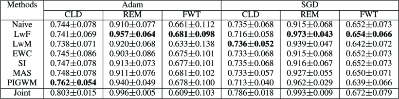

- A comprehensive summarization of these 6 RCL methods was undertaken, capturing their essence through a unified Taylor expansion.
- In the context of domain-incremental CL, we conducted an assessment of the performance of 6 RCL methods in MIS tasks. The evaluation encompassed two representative MIS scenarios, spanning a total of eight datasets.
- We evaluated the impact of different task orders, diverse model capacities, and various optimizers on these approaches, subsequently discussing the insights gleaned.
- More detials please see our paper.
- The code is available at BIBM23-B515.
What will regularized continuous learning performs if it was used to medical image segmentation: a preliminary analysis
Medical image segmentation (MIS) is vital yet challenging due to object diversity and complexity. Recent years significant progress has been made in this field. However, many MIS methods are image-driven, which makes it possible to either lose generalization capabilities or suffer from catastrophic forgetting when encountering new tasks. Continuous learning (CL)Â is a class of methods to overcome catastrophic forgetting.
Motivation
This research solely focuses on domain- incremental CL, as shown in Fig. 1, particularly significant and relevant to MIS due to diverse scanner data. Regularization-based CL (RCL) is an effective type of CL methods. RCL retains essential parameters to mitigate forgetting through regularization constraints. RCL has the advantage of protecting data privacy and ease of deployment, making it particularly suitable for MIS. However, the use of RCL in MIS is relatively unexplored and there is a lack of a unified theoretical expression that captures the diverse regularization adopted by different RCL methods.
Our Contributions
To summarize, our main contributions include:

Experiments
We provide a unified description of 6 RCL methods (LwF, LwM, EWC, SI, MAS, and PIGWM) using Taylor expansion and investigate their performances in 2 classic MIS scenarios, namely retinal vessel segmentation (RVS) and cardiac left ventricle segmentation (CLVS) on 8 datasets (CHASE, DRHAGIS, RITE and STARE for the former and M&Ms, LVSC, ACDC and SCD for the latter). We also explore the influence of different task orders (easy to hard or hard to easy), optimizers (Adam or SGD), and parameter capacities (2, 3, 4 or 5 down- and up-sampling pairs) on the performance of these methods. Our experimental results show that these methods are capable of mitigating catastrophic forgetting to a certain extent. Comparing to a hard-to-easy order, most of the methods perform better on all of the already known tasks in an easy-to-hard order. Optimizer Adam performs better on RVS and CLVS. Capacity increases are obviously effective for CLVS, but they have no significant impact on RVS.

Sources
Citation
@INPROCEEDINGS{10385386, author={Dai, Weihao and Feng, Chaolu and Chen, Shuaizheng and Li, Wei and Yang, Jinzhu and Zhao, Dazhe}, booktitle={2023 IEEE International Conference on Bioinformatics and Biomedicine (BIBM)}, title={What will regularized continuous learning performs if it was used to medical image segmentation: a preliminary analysis}, year={2023}, pages={1860-1863}, keywords={Image segmentation;Analytical models;Sensitivity analysis;Biological system modeling;Taylor series;Retinal vessels;Complexity theory;Continuous learning;Catastrophic forgetting;Medical image segmentation}, doi={10.1109/BIBM58861.2023.10385386}}